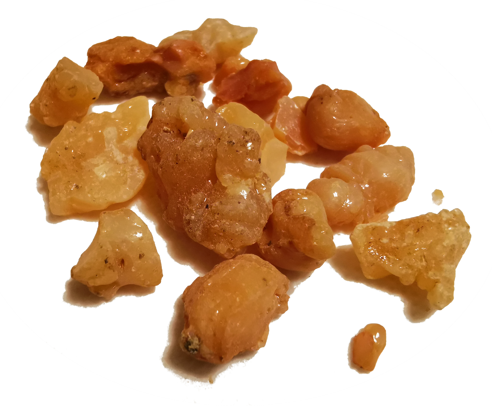
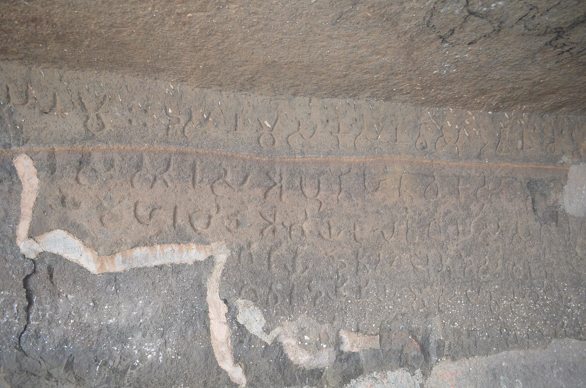
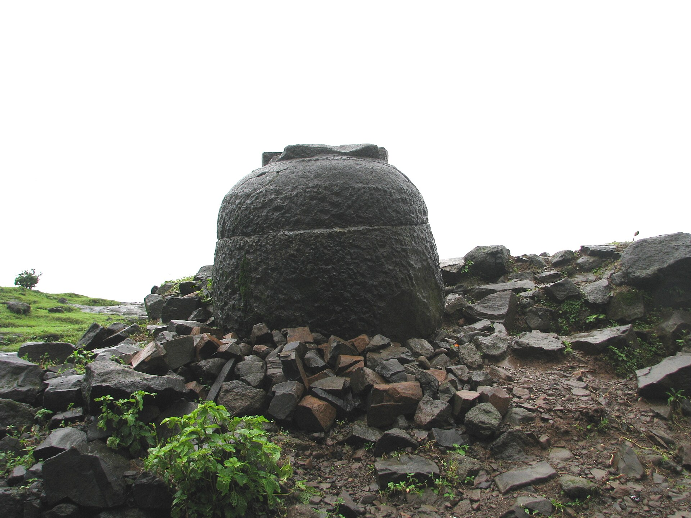
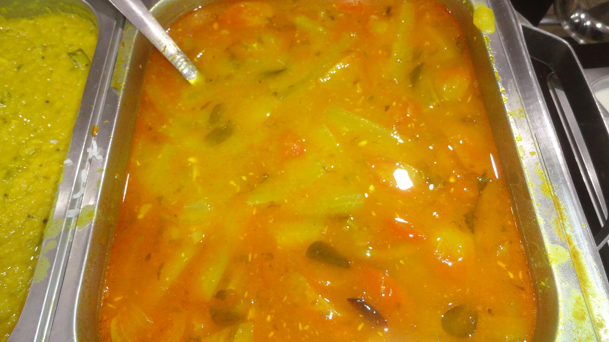

There was a time when I thought everything that appeared in a newspaper or a periodical was well researched and authentic. It might have been true, considering there were many scholars among those who wrote to newspapers. But that was also a time when access to information was hard. Today it is not as hard to get to primary sources as it was in the past. But if you think such authors would be more truthful today because there is easier access to information, and believe whatever appears in media is well researched, you would be surprised.
With the availability of information today, there should be fewer urban legends in the 21st century, because publications — print or online — could easily provide readers with more authenticated information. But this is not really the case, because as I will illustrate in the examples below, despite the greater accessibility to information you see more urban legends forming. In this article, I will focus on topics that relate to India.
A reason for this type of misinformation could be that many writers today are fluent in just one language, i.e. English, and are sourcing their ideas from writers outside India who are less familiar with Indian history and culture. You would be surprised — indeed shocked — to see the ignorance of writers who pen "expert" articles on online publications and print media, such as The Scroll, The Wire, The Hindu and many more, and in spite of the information available on the Internet and social media, fail to correct themselves, or offer even as much as an acknowledgement when their errors are pointed out. Worse, these fictional stories also enter textbooks and other print media as "facts".
Just to show how rampant this problem is, I present some cases from my own timeline on Twitter. Wherever possible, I have included a link to the articles making incorrect claims. I have also provided information on why they are incorrect, with appropriate sources.
Supposedly an excerpt from a book by food expert Salma Hussain, this claim states the Mughals introduced several fruits to India, including grapes.
What is wrong here? Grapes were known in India millennia before the Mughals arrived. For example, grapes are mentioned in Sanskrit texts like Charaka Samhita (approximately 2000 years old) and Amarakosha (approximately 1600 years old). Huen Tsang, a Chinese traveller who visited India in the 7th century, mentions them being used in India — around 1400 years ago. A Kannada work, Lokopakara, gives food recipes that use grapes as an ingredient, and dates to approximately 1000 years ago.
Is that true? Not by a long shot. Hing — or Hingu, its Sanskrit name — has been used in Indian cooking for at least 1500 years, if not earlier. It is mentioned in Sudraka's play Mrcchakatika. The author lived definitively before 500 CE, but possibly closer to 200 CE.

If you studied any of the school history books in India, you would have read that King Sher Shah Suri conceptualized large highways across the country, particularly the Grand Trunk road. But is that true? Trading routes such as Uttarapatha ("The Northern Route") and Dakshinapatha ("The Southern Route") existed from ancient times, at least from the era of Chandragupta Maurya, some 2500 years ago — that is at least 1800 years before Sher Shah. And there existed toll booths during Satavahana times, a good 2000 years ago. One such toll-collection pot is still visible at Naneghat, Maharashtra.


Here is an excerpt from the Kannada translation of a book by Bhagawati Charan Upadhyaya, a well-known scholar. The original Hindi work is called Bharateeya Samskriti ka Srota. The paragraph gives credit to Iltamish and Firoze Shah for the creation of the magnum opus on Indian music, Sangeeta Ratnakara. A translation of the relevant sentences:
"Sufi saints adapted Indian music easily. They came from Baghdad and Persia. […] The magnum opus Sangeeta Ratnakara was written in CE 1238, during the reign of Firoze Shah, son of Iltamish. This work considered all aspects of the contemporary music. All the courts had by this time accepted the music of foreign origin."
How far is this true? While it is accepted that Indian classical music was influenced by Persian music (and Arabic music to a lesser extent), and it was around the time this influence occurred, neither Firoze Shah nor Iltamish had any influence on the writing of Sangeeta Ratnakara. The fact is that Sharngadeva, a Kashmiri who migrated to Devagiri, worked as an accountant in King Bhillana's court and wrote Sangita Ratnakara. The paragraph above mentions neither the author's name nor his patron, but gives credit instead to Iltamish and Feroze Shah. This is as meaningful as giving credit to Krishna Raja Wodeyar IV, King of Mysore, for Einstein's General Theory of Relativity, merely because they were contemporaries.
Some JNU-trained historians have a knack for turning common sense upside down. In a bid to oppose anything sourced from Indian (Sanskrit or other Indian language) texts as regressive or patriarchal, they go to the extent of praising a ruler who increased taxes on cultivators from 20% to 50%. One would have to be truly blinded by ideology to claim his increase in taxes was driven by fiscal reasons rather than religious conviction.
Contrast this with the guidelines from Indian texts, which normally prescribed one sixth or one fifth of the produce as tax. You can see inscriptions that praise kings as benevolent for levying lower taxes. In fact, Kautilya in his Arthashastra mentions that tax must be collected in a way that does not trouble the citizens — as gently as a bee takes nectar from a flower.
The very popular daily food of South India did not need the Tanjavur Maratha kings for its invention. We have sources in Kannada literature showing that Sambar existed at least 400 years before Sambhaji (1657–1689 CE). Here is a reference from Shabdamani Darpana of Kesiraja, written around 1250 CE, which mentions "Sambarakavala" — rice with Sambar.

The recipe for "amrtavallari", described by King Mangarasa of south Karnataka around 1508 CE, is exactly how Jangri/Jahangir is made today. This is more than a century before Jahangir was born.
I could go on, but will stop here. This was not meant to be an exhaustive dissertation, but merely a glimpse of how misinformation is being perpetuated — sadly, at a time when access to primary resources is at its highest. So what should you do when you encounter an urban legend about some topic of Indian history? Do not go to Quora or Wikipedia as your source, but to primary sources instead, and see for yourself whether the claims hold.
The primary sources can be many, but when it comes to Indian history, languages, or culture, sources in Indian languages are far more reliable for accuracy. If you are examining the history of Indian cuisine, for instance, it is far more meaningful to consult texts in Indian languages — both ancient and modern — such as Supashastra texts in Sanskrit and other classical Indian languages, or scholarly commentaries and translations of these texts in contemporary Indian languages, rather than works that themselves used Persian or English sources from much later dates. Accessing these older primary sources is easier than you might think, thanks to resources like archive.org, which holds a rich assortment of such texts.
With thanks to everyone who contributed to these discussions on Twitter.